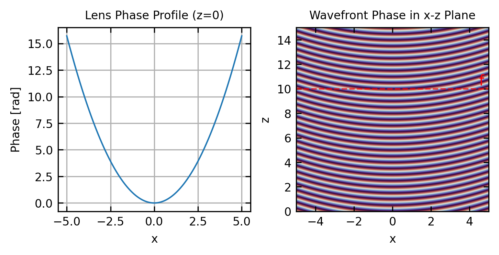
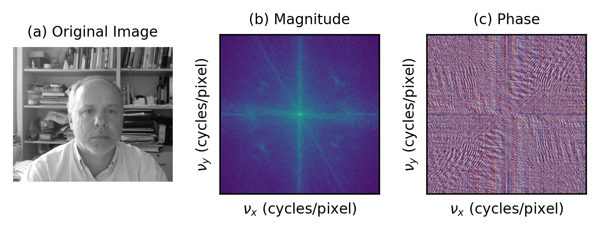
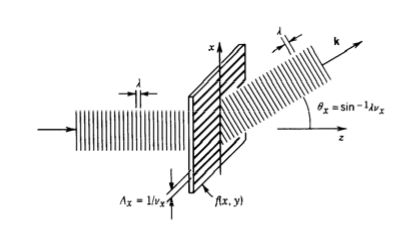
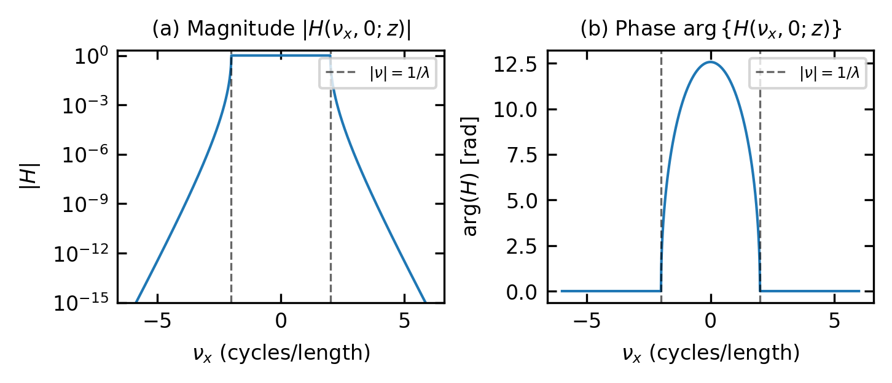

Fourier optics offers a robust analytical approach to understanding light propagation through optical systems by employing Fourier analysis techniques on optical fields. This framework elegantly connects image formation and optical resolution to the transmission of spatial information via light waves. Our exploration begins with examining complex transmittance functions, which give us fundamental insights into how various samples shape optical wavefronts. From this foundation, we will progress to the essential principles of Fourier optics and the associated diffraction integrals.
Transmission
When light interacts with an optical component or object, its amplitude and phase can be modified. Following Saleh and Teich’s formalism, we can characterize this interaction using the complex transmission factor \(t(x,y)\), which is defined as the ratio of the output field amplitude to the input field amplitude at each point \((x,y)\) in a plane:
This transmission factor is generally complex-valued, with its magnitude representing amplitude modulation and its phase representing phase modulation of the incident light.
For a thin lens, the primary effect is phase modulation. To derive the transmission function for a thin lens, we need to consider the optical path length through the lens at each point. Consider a planoconvex lens with one flat surface and one spherical surface of radius \(R\). The thickness of the lens varies with position according to:
\[d(x,y) = d_0 - \frac{(x^2+y^2)}{2R}\]
where \(d_0\) is the thickness at the center. As light passes through the lens, it experiences a phase delay proportional to the optical path length, which is the product of the refractive index \(n\) and the physical path length:
\[\phi(x,y) = k \cdot n \cdot d(x,y) - k \cdot d(x,y)_{\text{air}}\]
where \(k = 2\pi/\lambda\) is the wavenumber. Simplifying:
The first term represents a constant phase shift that we can ignore, and the second term gives us the position-dependent phase modulation. For a lens with focal length \(f\), the relationship between \(R\) and \(f\) is given by the lensmaker’s formula, which for a planoconvex lens simplifies to:
This quadratic phase factor represents the position-dependent phase delay introduced by the lens, with greater delays at the thicker portions of the lens.
Code
# Parameterswavelength =0.5# arbitrary unitsk =2*np.pi/wavelengthf =10# focal lengthx = np.linspace(-5, 5, 400)z = np.linspace(0, 15, 400)X, Z = np.meshgrid(x, z)# Calculate the phase profile at the lens (z=0)lens_phase = k*(x**2)/(2*f)# Calculate the phase in the x-z plane after the lensphase_xz = np.zeros_like(X)for i, z_val inenumerate(z):if z_val ==0: phase_xz[i,:] = lens_phaseelse: phase_xz[i,:] = k*((X[i,:]**2)/(2*f) - z_val)# Wrap phase to [-π,π] for visualizationphase_xz_wrapped = np.angle(np.exp(1j*phase_xz))fig, ax = plt.subplots(1, 2, figsize=get_size(12,6))ax[0].plot(x, lens_phase)ax[0].set_xlabel('x')ax[0].set_ylabel('Phase [rad]')ax[0].set_title('Lens Phase Profile (z=0)')ax[0].grid(True)im = ax[1].imshow(phase_xz_wrapped, extent=[x.min(), x.max(), z.min(), z.max()], origin='lower', cmap='twilight', aspect='auto')ax[1].set_xlabel('x')ax[1].set_ylabel('z')ax[1].set_title('Wavefront Phase in x-z Plane')ax[1].axhline(y=f, color='r', linestyle='--', alpha=0.7)ax[1].text(x.max()-0.5, f+0.3, 'f', color='red')fig.set_layout_engine('constrained')plt.show()

Figure 1— Phase modulation effect of a thin lens on an incident plane wave. (a) The quadratic phase profile introduced by the lens at z=0. (b) The wavefront shape in the x-z plane after passing through the lens (twilight colormap: phase from \(-\pi\) to \(+\pi\) rad), showing how the initially flat wavefront is transformed into a converging spherical wavefront.
This transmission function is crucial in Fourier optics as it allows us to mathematically model how a lens transforms an incident field. When placed in the path of a light wave, the lens modifies the wavefront according to this transmission factor. As will be shown in the next lecture, a lens performs an exact spatial Fourier transform of the input field at its back focal plane.
Generalization to Arbitrary Thickness Objects
For arbitrary thickness objects, we can extend our treatment beyond the thin-element approximation. When light propagates through a medium of varying thickness and refractive index, the transmission function becomes:
\[t(x,y) = A(x,y) e^{i\phi(x,y)}\]
where \(A(x,y)\) represents amplitude modulation (absorption or gain) and \(\phi(x,y)\) represents phase modulation. For a thick object, the phase shift is given by the path integral through the object:
\[\phi(x,y) = k \int_\text{path} [n(x,y,z) - n_0] dz\]
where \(n(x,y,z)\) is the spatially varying refractive index within the object, \(n_0\) is the refractive index of the surrounding medium, and the integration is performed along the light path through the object.
This formulation accounts for complex three-dimensional objects where both the thickness and the refractive index may vary with position. For inhomogeneous media, we can express the transmission function as:
\[t(x,y) = \exp\left[ -\frac{1}{2}\alpha(x,y) + i k\int_0^{d(x,y)} [n(x,y,z)-n_0]\,dz \right]\]
where \(\alpha(x,y)\) is the absorption coefficient integrated along the path, and \(d(x,y)\) is the thickness at position \((x,y)\).
For many practical applications, this can be approximated by considering the effective phase and amplitude changes, leading to the more manageable form:
\[t(x,y) = \tau(x,y) e^{i k(n-n_0)d(x,y)}\]
where \(\tau(x,y)\) is the amplitude transmission coefficient accounting for reflection and absorption losses.
This mathematical framework will become crucially important later when we describe image formation from waves that have propagated through an object. The transmission function directly encodes how an object modifies both the amplitude and phase of the incident light field, which determines how the object appears in an imaging system. Different imaging modalities (such as bright-field, phase-contrast, or differential interference contrast microscopy) essentially measure different aspects of this complex transmission function, revealing different properties of the object being imaged.
Fourier Transform Review
Basic Definitions
The Fourier transform decomposes a function into its constituent frequency components. For a function \(f(x)\), its Fourier transform \(\hat{F}(\nu)\) is defined as:
Here \(\nu\) denotes the spatial frequency in cycles per unit length. This “ordinary frequency” convention is standard in optics (Goodman, Saleh & Teich) and is used throughout this lecture. An alternative “angular” convention writes \(F(k) = \int f(x)e^{-ikx}dx\) with \(k = 2\pi\nu\) (units: rad/length); the two are related by \(\hat{F}(\nu) = F(2\pi\nu)\).
In optics, \(x\) typically represents a spatial coordinate and \(\nu\) the corresponding spatial frequency. When working with discrete data you will use the Discrete Fourier Transform (DFT), efficiently computed by the FFT algorithm:
Code
import numpy as npfrom scipy import fftpack# Generate a simple signalx = np.linspace(0, 1, 1000) # spatial coordinatef = np.sin(2*np.pi*5*x) +0.5*np.sin(2*np.pi*10*x) # 5 and 10 cycles/unit# Compute the FFTF = fftpack.fft(f)freqs = fftpack.fftfreq(len(x), x[1]-x[0]) # cycles/length# fftshift centres zero frequencyF_shifted = fftpack.fftshift(F)freqs_shifted = fftpack.fftshift(freqs)plt.figure(figsize=get_size(12, 5))plt.subplot(121)plt.plot(x, f)plt.xlabel('position x')plt.ylabel('amplitude')plt.title('original signal')plt.subplot(122)plt.plot(freqs_shifted, np.abs(F_shifted))plt.xlabel(r'spatial frequency $\nu$(cycles/length)')plt.ylabel(r'magnitude $|\hat{F}(\nu)|$')plt.title('fourier spectrum')plt.xlim(-20, 20)plt.tight_layout()plt.show()
Convolution in the spatial domain becomes pointwise multiplication in the frequency domain — and vice versa. This is the key theorem behind spatial filtering in the 4f system (covered in the next lecture).
The total energy (or power) is preserved under the Fourier transform.
Common Fourier Transform Pairs
Function
Fourier Transform \(\hat{F}(\nu)\)
\(\delta(x)\)
\(1\)
\(1\)
\(\delta(\nu)\)
\(\text{rect}(x/a)\)
\(a\,\text{sinc}(a\nu)\)
\(e^{-\pi x^2}\)
\(e^{-\pi \nu^2}\)
\(\cos(2\pi a x)\)
\(\tfrac{1}{2}[\delta(\nu-a) + \delta(\nu+a)]\)
\(e^{i2\pi a x}\)
\(\delta(\nu - a)\)
Here \(\text{sinc}(u) = \sin(\pi u)/(\pi u)\). Understanding these transform pairs is essential for optical analysis: a rectangular aperture produces a sinc-function diffraction pattern, a Gaussian beam maintains its Gaussian profile under propagation, and a periodic grating (cosine) diffracts into exactly two discrete orders.
Building on our analysis of wave propagation through various optical elements, we now explore a fundamental concept in Fourier optics that connects spatial patterns to wave propagation directions. Just as a lens converts a plane wave into a converging spherical wave and a prism tilts the wavefront to change the propagation direction, complex spatial patterns decompose into multiple propagation directions — a relationship that will become essential when we discuss optical imaging systems, diffraction limits, and the resolution capabilities of microscopes and telescopes.
The Concept of Spatial Frequencies
Just as a temporal signal can be decomposed into frequency components through Fourier analysis, a spatial pattern or object can be represented as a superposition of spatial harmonic functions with different spatial frequencies. The spatial frequency \(\nu\) represents how rapidly the intensity or phase of an optical field changes with distance.
For a two-dimensional complex spatial harmonic function:
\[f(x,y) = A e^{i 2\pi(\nu_x x + \nu_y y)}\]
where \(\nu_x\) and \(\nu_y\) are the spatial frequencies in the \(x\) and \(y\) directions (in cycles per unit length) and \(A\) is the complex amplitude. Higher spatial frequencies correspond to finer details in an object, while lower spatial frequencies represent coarser features.
The function \(f(x,y)\) can be expressed as the Fourier transform of its spatial frequency components:
where \(\hat{F}(\nu_x, \nu_y)\) is the spatial frequency spectrum of \(f(x,y)\).
A concrete illustration: the 2D Fourier transform of a real image reveals how its spatial frequency content is distributed. Low-\(\nu\) components cluster near the centre of the spectrum (slow variations, overall shape) while high-\(\nu\) components lie at the periphery (sharp edges, fine texture).
Code
from PIL import Imageimport matplotlib.pyplot as pltimport numpy as np# Load image and convert to grayscaleimg = plt.imread('img/frank.png')iflen(img.shape) >2: img_gray = np.mean(img, axis=2)else: img_gray = img# Compute 2D FFTimg_fft = np.fft.fftshift(np.fft.fft2(img_gray))freq_x = np.fft.fftshift(np.fft.fftfreq(img_gray.shape[1]))freq_y = np.fft.fftshift(np.fft.fftfreq(img_gray.shape[0]))fig, ax = plt.subplots(1, 3, figsize=get_size(12, 5))ax[0].imshow(img_gray, cmap='gray')ax[0].set_title('(a) Original Image')ax[0].set_axis_off()ax[1].imshow(np.log(np.abs(img_fft) +1), cmap='viridis', extent=[freq_x.min(), freq_x.max(), freq_y.min(), freq_y.max()])ax[1].set_title('(b) Magnitude')ax[1].set_xlabel(r'$\nu_x$(cycles/pixel)')ax[1].set_ylabel(r'$\nu_y$(cycles/pixel)')ax[1].set_xticks([])ax[1].set_yticks([])ax[2].imshow(np.angle(img_fft), cmap='twilight', extent=[freq_x.min(), freq_x.max(), freq_y.min(), freq_y.max()])ax[2].set_title('(c) Phase')ax[2].set_xlabel(r'$\nu_x$(cycles/pixel)')ax[2].set_ylabel(r'$\nu_y$(cycles/pixel)')ax[2].set_xticks([])ax[2].set_yticks([])plt.tight_layout()plt.show()

Figure 2— Spatial frequency analysis of an image. (a) Original grayscale image. (b) Magnitude of the 2D Fourier transform (log scale) — low frequencies cluster at the centre, high frequencies at the periphery. (c) Phase of the Fourier transform.
Correspondence to Plane Wave Angular Components
In the previous subsection we decomposed an arbitrary field into spatial harmonics \(e^{i2\pi(\nu_x x + \nu_y y)}\). Each such harmonic is, in fact, the cross-sectional trace of a plane wave. A monochromatic plane wave
\[U(x,y,z) = U_0\,e^{i(k_x x + k_y y + k_z z)}\]
evaluated at \(z=0\) gives exactly \(U_0\,e^{i2\pi(\nu_x x + \nu_y y)}\) provided we identify
\[k_x = 2\pi\nu_x, \qquad k_y = 2\pi\nu_y\]
The dispersion relation \(|\mathbf{k}|^2 = k_x^2+k_y^2+k_z^2 = (2\pi/\lambda)^2\) then fixes the axial component:
So each spatial frequency pair \((\nu_x,\nu_y)\) in an object field corresponds uniquely to a plane wave traveling at angles \((\theta_x,\theta_y)\). Higher spatial frequencies (fine object features) diffract to larger angles; lower spatial frequencies (coarse features) travel nearly paraxially.

Figure 3— Principle of plane wave angular decomposition. (Image taken from Saleh/Teich “Principles of Photonics”)
Each spatial frequency component of an object therefore diffracts light into a specific direction. Behind the object, the plane-wave component \((\nu_x,\nu_y)\) propagates and acquires the phase factor \(e^{ik_z z}\):
\[U(x,y,z) = U_0\, e^{i(k_x x + k_y y)}\, e^{ik_z z}\]
where the propagation constant along \(z\) depends on the transverse spatial frequencies:
This expression shows that spatial frequencies \(\nu_x^2+\nu_y^2 < 1/\lambda^2\) give real \(k_z\) (propagating waves), while \(\nu_x^2+\nu_y^2 > 1/\lambda^2\) gives imaginary \(k_z\) (evanescent waves that decay exponentially along \(z\)). The wavelength therefore sets an absolute upper bound on the spatial frequencies that can propagate freely — this is the origin of the diffraction limit.
Angular spectrum method. Because the plane waves \(e^{i2\pi(\nu_x x+\nu_y y)}\) form a complete basis, any field at the input plane can be decomposed as:
where \(\hat{U}(\nu_x,\nu_y) = \mathcal{F}\{U(x,y,0)\}\) is the 2D Fourier transform. Since each plane-wave component propagates independently and acquires the phase \(e^{ik_z z}\), the field at any downstream plane \(z\) is:
is the transfer function of free space. Propagation is thus a linear filtering operation in the spatial-frequency domain: multiply the input spectrum by \(H\) and inverse-Fourier-transform. This is the exact scalar-wave result — no paraxial approximation has been made. Expanding \(k_z\) to lower order in \(\nu\) produces the paraxial approximations: the Fresnel transfer function is derived just below, and the Fraunhofer far-field limit follows in Section 0.0.8. In the next lecture the same transfer function \(H\) is the starting point for analysing how optical systems filter spatial frequencies.
Code
wavelength_tf =0.5k_tf =2* np.pi / wavelength_tfz_tf =1.0nu_max =3.0/ wavelength_tf # show beyond the evanescent boundarynu = np.linspace(-nu_max, nu_max, 2000)# Compute kz (complex-valued to capture evanescent regime)arg =1- wavelength_tf**2* nu**2kz_tf = (2* np.pi / wavelength_tf) * np.sqrt(arg.astype(complex))# Transfer function along nu_x with nu_y = 0H_tf = np.exp(1j* kz_tf * z_tf)fig, axes = plt.subplots(1, 2, figsize=get_size(12, 5))# Boundary between propagating and evanescentnu_boundary =1.0/ wavelength_tf# (a) Magnitude — use log scale to reveal exponential decayaxes[0].plot(nu, np.abs(H_tf))axes[0].axvline(x=nu_boundary, color='k', linestyle='--', linewidth=0.8, alpha=0.6, label=r'$|\nu|=1/\lambda$')axes[0].axvline(x=-nu_boundary, color='k', linestyle='--', linewidth=0.8, alpha=0.6)axes[0].set_xlabel(r'$\nu_x$(cycles/length)')axes[0].set_ylabel(r'$|H|$')axes[0].set_yscale('log')axes[0].set_ylim(bottom=1e-15, top=2)axes[0].set_title(r'(a) Magnitude $|H(\nu_x, 0; z)|$')axes[0].legend(fontsize=6, loc='upper right')# (b) Phase — unwrap to remove 2π jumpsphase_tf = np.unwrap(np.angle(H_tf))axes[1].plot(nu, phase_tf)axes[1].axvline(x=nu_boundary, color='k', linestyle='--', linewidth=0.8, alpha=0.6, label=r'$|\nu|=1/\lambda$')axes[1].axvline(x=-nu_boundary, color='k', linestyle='--', linewidth=0.8, alpha=0.6)axes[1].set_xlabel(r'$\nu_x$(cycles/length)')axes[1].set_ylabel(r'$\arg(H)$[rad]')axes[1].set_title(r'(b) Phase $\arg\{H(\nu_x, 0; z)\}$')axes[1].legend(fontsize=6, loc='upper right')fig.set_layout_engine('constrained')plt.show()

Figure 4— Magnitude and phase of the free-space transfer function \(H(\nu_x, 0; z)\) along the \(\nu_x\) axis for \(\lambda=0.5\) and \(z=1\). Inside \(|\nu_x| < 1/\lambda\) the function oscillates (propagating waves); outside it decays exponentially (evanescent waves).
Paraxial limit: the Fresnel transfer function. When the propagation angles are small, so that the transverse spatial frequencies satisfy \(\lambda^2(\nu_x^2+\nu_y^2)\ll 1\), the square root in the exponent of \(H\) can be expanded:
The exact transfer function is a pure phase that follows \(\sqrt{1-\lambda^2\nu^2}\); the Fresnel approximation replaces that phase with a parabola in \(\nu\). The constant term \(e^{ikz}\) is the on-axis phase, and the quadratic term is the leading angle-dependent correction. The approximation is accurate for paraxial spatial frequencies and fails only as \(\nu\) approaches the evanescent cutoff \(1/\lambda\), where the true phase curve bends away from the parabola.
The same propagation step has an equivalent form in real space. The inverse Fourier transform of \(H_\mathrm{F}\) is the Fresnel propagator\(h(x,y;z)\). Using the 2D Gaussian transform pair \(\mathcal{F}^{-1}\{e^{-i\pi\lambda z(\nu_x^2+\nu_y^2)}\} = (i\lambda z)^{-1}\exp[i\pi(x^2+y^2)/\lambda z]\) together with \(\pi/\lambda z = k/2z\):
Propagation over a distance \(z\) can therefore be carried out two equivalent ways: multiply the angular spectrum by \(H_\mathrm{F}\), or convolve the field with \(h\). In Section 0.0.8 we reach this same propagator \(h(x,y;z)\) from the opposite starting point, the Huygens–Fresnel principle in real space, confirming that the angular-spectrum and Huygens–Fresnel descriptions are one theory.
Spatial Frequency and Propagation Angles of a Grating
We saw this principle in action when analyzing diffraction gratings, where we decomposed the grating’s periodic structure into angular components using the grating vector. For a grating with period \(d\), the spatial frequency is \(\nu_x = 1/d\), and the directions of diffracted orders are given by:
\[\sin\theta_m = m\lambda/d = m\lambda\nu_x\]
where \(m\) is the diffraction order. This shows how the grating’s spatial frequency determines the angles of diffracted light, which is a specific application of the more general Fourier relationship between spatial frequencies and propagation angles.
Figure 5— Visualization of a 2D object containing a single spatial frequency in the x-direction. (a) The object pattern showing sinusoidal variation along x with frequency νₓ. (b) The Fourier transform magnitude, showing two symmetric peaks at ±νₓ. (c) The corresponding angular spectrum: the spatial frequency νₓ maps to diffraction angles ±θ according to sin(θ) = λνₓ.
Wave Propagation Through Objects
When a plane wave propagating along the \(z\)-axis encounters an object, its wavefronts are modified according to the object’s transmission function. The visualizations below illustrate how different optical elements transform the incident wavefront. The first three cases (free space, lens, prism) are accurate paraxial representations; the fourth panel shows propagation of an arbitrary phase object computed with the angular spectrum method (the exact scalar-theory treatment): the field at \(z=0\) is decomposed into plane waves via a Fourier transform, each component is propagated with its own phase factor \(e^{ik_z z}\), and the field is reconstructed by the inverse transform.
Figure 6— Wavefront propagation after transmission through different optical elements. (a) Free space: flat wavefronts maintained. (b) Converging lens: spherical wavefronts converging at the focal point. (c) Prism: tilted wavefronts, changed propagation direction. (d) Arbitrary phase object: phase map computed using the angular spectrum method, showing how rapidly-varying phase features (high spatial frequencies) diffract to large angles and disperse faster.
The top panels confirm that free space and paraxial elements (lens, prism) produce the expected wavefront shapes. In the bottom-right panel, the initial sinusoidal phase modulation \(\phi(x) = k(2\sin x + 0.5\sin 3x)\) decomposes into a discrete set of plane-wave components. Because each component propagates at a different angle (\(k_z = \sqrt{k^2-k_x^2}\)), the phase pattern evolves and eventually breaks up as higher spatial frequencies diffract more strongly. This is diffraction at work — the reason why the geometric-optics picture of rigid wavefront propagation fails at fine scales.
Diffraction Integrals
Having established that each spatial frequency component of an object propagates as a distinct plane wave, we now derive the scalar diffraction integral that connects the field \(U(x',y',0)\) at the object plane to the field \(U(x,y,z)\) at any downstream plane. You encountered the Huygens–Fresnel principle in your wave optics studies; here we make it quantitative and connect it directly to Fourier transforms.
The Huygens–Fresnel Integral
The Huygens–Fresnel principle states that every point on a wavefront acts as a secondary source of spherical waves. The field at any downstream point is the coherent superposition of all these secondary waves. In the scalar approximation and for monochromatic light of wavenumber \(k = 2\pi/\lambda\), this gives the diffraction integral:
where \(r = \sqrt{(x-x')^2+(y-y')^2+z^2}\) is the distance from source point \((x',y',0)\) to observation point \((x,y,z)\), and \(\cos\theta \approx z/r\) is the obliquity factor (close to 1 for paraxial propagation).
The Fresnel Approximation
For paraxial propagation — when transverse displacements are small compared to the propagation distance (\(|x-x'|, |y-y'| \ll z\)) — we expand \(r\) to second order:
Keeping this quadratic correction in the phase \(e^{ikr}\) but approximating \(r\approx z\) in the amplitude \(1/r\) yields the Fresnel diffraction integral:
This is a convolution of \(U(x',y',0)\) with the Fresnel propagator \(h(x,y;z) = \frac{e^{ikz}}{i\lambda z}\exp\!\left[\frac{ik}{2z}(x^2+y^2)\right]\). Note that Gaussian beam propagation from Lecture 5 is a direct consequence of the Fresnel integral applied to a Gaussian aperture field.
This real-space propagator is identical to the inverse Fourier transform of the Fresnel transfer function \(H_\mathrm{F}\) found earlier from the angular-spectrum expansion. The two derivations begin at opposite ends: one expands the exact transfer function \(H\) in the frequency domain, the other expands the spherical-wave kernel \(e^{ikr}/r\) in real space. They converge on the same \(h(x,y;z)\). This is the concrete confirmation that the angular-spectrum method and the Huygens–Fresnel principle are two representations of a single scalar diffraction theory, linked by a Fourier transform: multiplying the spectrum by \(H_\mathrm{F}\) and convolving the field with \(h\) are the same operation.
Fraunhofer Diffraction: The Far-Field Fourier Transform
In the far field — when \(z \gg \frac{k\,a^2}{2} = \frac{\pi a^2}{\lambda}\), where \(a\) is the transverse extent of the aperture — the quadratic phase \(e^{ik(x'^2+y'^2)/2z}\) accumulated across the object is negligible. Setting it to 1, the Fresnel integral factorises into:
This is the central result of Fourier optics: the far-field diffraction pattern is the Fourier transform of the aperture. The spatial scale in the diffraction pattern is set by \(\lambda z\) — a wider aperture produces a narrower diffraction pattern, quantifying the wave-optics uncertainty principle.
Figure 7— Fraunhofer diffraction for three aperture geometries. Each row pairs the aperture (left) with its far-field intensity pattern (right). (a/b) Single slit of full width \(a\): sinc² pattern. (c/d) Double slit (width \(w\), separation \(d\)): sinc² envelope modulated by \(\cos^2(\pi d\nu_x)\). (e/f) Circular aperture of diameter \(D\): 2D Airy pattern.
The single-slit pattern confirms the sinc² form: the first zeros appear at \(\nu_x = \pm 1/a\), so a narrower slit produces a wider diffraction pattern. The double-slit pattern shows the familiar Young interference fringes (from the \(\cos^2\) factor) inside a sinc² envelope (from the finite slit width). The circular aperture yields the Airy pattern — the 2D circularly symmetric analogue of sinc² — whose first zero defines the Rayleigh criterion for resolution derived formally in the next lecture.